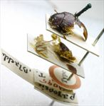

Click on images to enlarge
.jpg){kind=link}

Paropsis borealis type specimen, lateral view & labels
.jpg)
Paropsis borealis type specimen, lateral view
Name
Trachymela borealis (Blackburn, 1896)
Type specimen
Location: BMNH
Label data: “Type” (red-bordered circle), “3095 N.T. T”, “Blackburn coll. 1910-236.”, “Paropsis borealis Blackb.”
Female (or so Blackburn surmised, as the specimen had lost its tarsi when he examined it); carded specimen; Size: approximately 9 mm (4 lines, as given by Blackburn); the specimen has been severely damaged by Anthrenus in the past.
Notes
From Blackburn's notes, the "markings resemble those of P. asperula, Chp.", and those dark markings can indeed be seen on what remains of the type. In the other characters that he uses to distinguish it from P. asperula, he mentions finer pronotal and elytral puncturation and the absence of a distinction between the discal and marginal parts of the elytra. Blackburn indicated that the scutellum is punctured ("punctulato").
In my view, this is very likely T. sjoestedti Weise, a species that is very similar to T. exarata (= P. asperula), and does tend to have finer pronotal puncturation than the latter species. The size (9 mm) is somewhat on the small side for a female specimen of that species, but would certainly be within range. The fact that the scutellum is punctured would be somewhat unusual, though some fine punctures can be present on the scutellum in that species. I am not aware of any other species from the Northern Territory that would fit the description.
Copyright © 2026. All rights reserved.